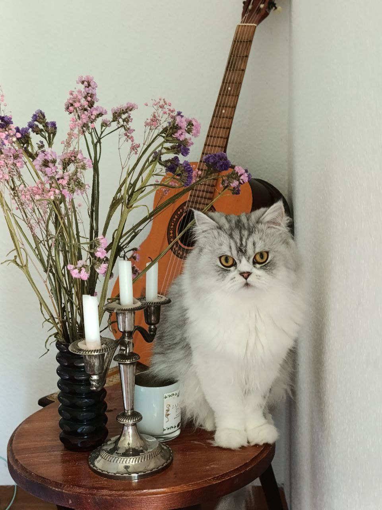

Ласкаво просимо до meowspet!
Ми допомагаємо безпритульним тваринам знайти дім і дбайливих власників. Наша місія - врятувати і забезпечити турботу для кожної тварини.
- Легкий пошук
- Персоналізовані рекомендації
- Можливість онлайн заявки на усиновлення
Пошук свого ідеального друга
-
-
Luki
 -
Річард
Хто ми і чим займаємося
meowspet - це ініціатива, що базується на вірі в благородну місію допомоги тваринам.
Нинішня проблема
Нині притулки переповнені, і їм не вистачає допомоги. Багато тварин потребують нових домівок і турботи.
Як ми вирішуємо цю проблему?
Наш проєкт збирає інформацію про тварин з різних притулків і об'єднує її в одному місці. Ми створюємо зручну систему пошуку та усиновлення тварин, щоб більше людей могли легко знаходити і брати вихованців із притулків.